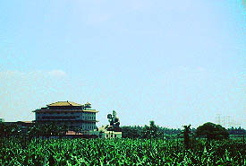
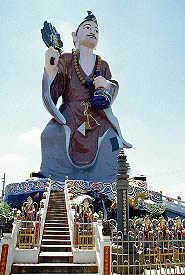
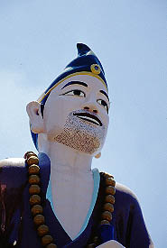
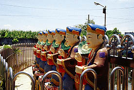
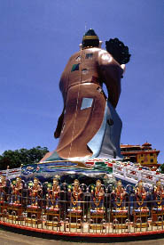
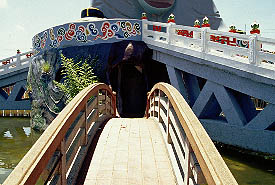
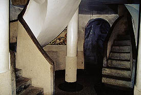
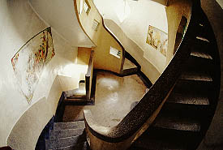
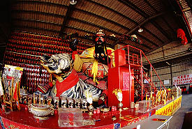
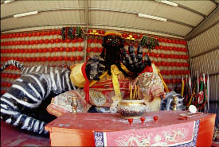

鳳山寺/高雄縣旗山鎮
台湾といえばバナナである。で、その台湾でもバナナの産地として有名な町が旗山である。
さすがにバナナの町らしく旗山の郊外には見渡す限りのバナナ畑が続いている。
そのバナナ畑の中にでかいモノが立っている。
 
これが鳳山寺の済公活仏像である。
「活仏の済公の像」つまり、生き仏の済さんの像という意味合いと思われる。この済さんどんな人かは知らないが某ガイドブックによれば南宋時代の坊さんで酒が好きだったらしい。(注１）
なるほど、酒徳利と扇を持ってかなり御機嫌な御様子である。表情もこころなし楽しそうである。ポージングも今にも踊りだしそうだ。
要するに、これは済さんが宴会で酒飲んであ〜らえっさっさ〜な状態をそのまま活仏像という形で巨大化してしまったものなのだ。
しかもヒゲののび具合から宴会は2日目に突入していると思われる。

どんな目的からこれが造られたのか知らないがいいのか、こんなんで。
池の上に立ち（これも酒のつもりか？）、外側には済さんの見ている幻覚なのか済さんの飲み友達なのかやけにしつこい色使いのファッションの方々がいらしゃる。
 
で、背中の図。済さん、それはオシャレなのか？
なんだか酒臭そうな大仏さんだが、中に入ってみる。

内部は7層になっており二重の螺旋階段で昇り降りする。
 
これといって何があるわけではないが私がかねてから唱える大仏=栄螺堂の進化型説を裏付ける物件としては貴重だ。
で、外へ。向かいに本堂があるが参拝客もまばらでうらぶれた雰囲気。
かくして済さんはこれからも終わる事なき酒宴をこのバナナ畑のど真ん中で楽しみ続けるのであろう。
おまけ
この鳳山寺のすぐ近くにハンドメイド大仏といっても良さそうなイカした張り子大仏があったので、一応紹介しておこう。
 
これらはガレージのようなところに祀られていた。もしかしたらお祭りか何かで仮設的に造られたものかもしれない。名前は失念したが、財産が増える御利益があるようなネーミングだったような記憶があるので日本で言えば銭洗い弁天のようなものかと思われる。
モチーフはおそらく歴史上の人物だろう。真っ赤な顔に黒い長髭。相当の異形である。
しかし特筆すべきは鳳山寺の方には人はまばらだったがこちらには結構参拝客が多かった、という事。
やっぱ人の宴会見てるより、現世利益って事ですかねえ。
注１
済公活仏というのは李修縁というお坊さんの事でおおやけをすくう生き仏という意味だそうです。
酒好きで通っているが実際には酒を飲んでるふりをして水を飲んでいたそうです。これは金持ちに利用されるのを避けるための演技ということだったんでしょう。
単なる宴会好きなオヤジじゃななかったんですね。失礼しました。
情報提供はkoiさんです
次のスポットへGO!
台湾大仏列伝2のページへ
珍寺大道場
HOME